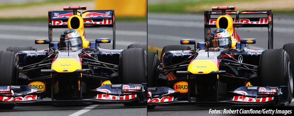

DRS
Sistema de Redução de Arrasto

Sistema de Redução de Arrasto ou DRS (Drag Reduction System, em inglês) é uma tecnologia automobilística cuja finalidade é reduzir o efeito do arrasto aerodinâmico e permitir ultrapassagens na Fórmula 1. Esta tecnologia foi introduzida no GP da Austrália da temporada 2011 e consiste num flap localizado na asa traseira do veiculo que é acionado pelo piloto, permitindo a ultrapassagem.[1] Sua utilização é regulamentada pela FIA, sendo muito elogiada pelos pilotos em geral.